El aprendizaje por refuerzo (RL, Reinforcement Learning) es la rama de la IA en la que un agente aprende a base de premios y castigos: prueba acciones, observa la recompensa y ajusta su comportamiento para acumular el máximo premio a largo plazo. Aquí lo vemos sobre un Arkanoid simplificado, donde el agente solo puede mover una pala a izquierda/derecha o dejarla quieta, y debe aprender a devolver la pelota y romper ladrillos sin que nadie le explique las reglas.
Cada algoritmo de este cuaderno se ha tratado igual: se construye, se entrena de verdad, se leen sus métricas (recompensa, pérdida, exploración, throughput) y, si no aprende, se ajusta (hiperparámetros, arquitectura, regla de actualización) hasta que mejora de forma medible. Esa misma disciplina —proponer, entrenar, medir, quedarse con lo que funciona— es la que aplicamos con agentes de IA para afinar el sistema.
La simulación de paso fijo, el estado que ve el agente y cómo se reinicia un episodio.
El agente sustituye al jugador: su red decide las 3 acciones para cientos de partidas a la vez.
La transición (s, a, r, s', done), el replay buffer y el rollout: la memoria del aprendizaje.
El paso de gradiente, la red objetivo y el flujo desde el entrenamiento hasta las curvas en pantalla.
Antes de entrar en cada algoritmo conviene fijar el vocabulario. Todo el aprendizaje por refuerzo —da igual el método— gira en torno a un mismo bucle y a un puñado de componentes. Si los entiendes aquí, el resto del cuaderno encaja solo.
El RL modela una conversación que se repite millones de veces entre dos partes. En cada paso de tiempo t: el agente observa el estado sₜ, elige una acción aₜ; el entorno aplica esa acción, evoluciona y devuelve la recompensa rₜ y el siguiente estado sₜ₊₁. El agente usa esa información para mejorar y vuelta a empezar. El objetivo del agente es maximizar la recompensa acumulada a largo plazo, no solo la inmediata.
Lo que el agente percibe en un instante. Aquí, 6 números: posición y velocidad de la pelota, posición de la pala y la distancia pelota–pala. Es la "foto" sobre la que decide.
Lo que el agente puede hacer. Aquí, 3 acciones discretas: mover la pala a la izquierda, mantenerla o moverla a la derecha.
La señal numérica que premia o castiga cada paso. Define qué significa "jugar bien". El agente no busca otra cosa que acumular recompensa.
La estrategia del agente: una función que, dado un estado, decide la acción (o una probabilidad por acción). Es lo que de verdad queremos aprender.
Cuánta recompensa futura cabe esperar. V(s) mide lo bueno que es un estado; Q(s,a), lo bueno que es tomar una acción en un estado. Guían a la política.
Una partida completa, desde el saque hasta perder la pelota o limpiar el nivel. El agente aprende de muchos episodios; medimos la recompensa media de los últimos 100.
El dilema central: ¿pruebo algo nuevo (explorar) por si es mejor, o aprovecho lo que ya sé que funciona (explotar)? Demasiada explotación estanca; demasiada exploración no avanza.
Un almacén de experiencias pasadas (s,a,r,s') del que se muestrean lotes para entrenar. Rompe la correlación temporal y reutiliza cada dato. Propio de métodos off-policy.
Una predicción de cómo responde el entorno: dado (s,a), ¿cuál es s' y r? La mayoría de métodos no lo usan (model-free); el World Model sí (model-based).
Una recompensa de solo +1 / −1 sería pobre: el agente recibiría señal en muy pocos momentos. Aquí usamos varios eventos de distinta magnitud para dar pistas más ricas y frecuentes:
| Evento | Recompensa | Para qué |
|---|---|---|
| Romper un ladrillo | +1.0 | El objetivo del juego. Premio claro y repetible. |
| Devolver la pelota (rebote) | +0.2 | Premio intermedio: enseña a no perder la pelota antes de saber romper ladrillos. |
| Perder la pelota | −1.0 | Castigo terminal: termina el episodio. Le enseña a colocar la pala. |
| Completar el nivel | +5.0 | Gran premio terminal por limpiar los 28 ladrillos. |
| Acercar la pala a la pelota | shaping ≈ +0.3·Δ | Recompensa densa y telescópica (potential shaping): da señal en cada paso sin cambiar la política óptima. Acelera mucho el aprendizaje inicial. |
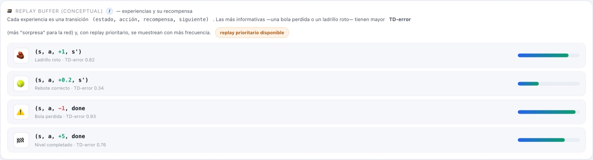
¿Cómo "aprende" el agente? Mediante una red neuronal: una función con miles de parámetros (pesos) que se ajustan para acertar cada vez más. La nuestra es un perceptrón multicapa (MLP): toma los 6 números del estado, los pasa por dos capas ocultas de 128 neuronas con activación ReLU (que introduce la no linealidad necesaria para aprender relaciones complejas) y produce la salida. Según el algoritmo, esa salida es distinta: en DQN y World Model son los 3 valores Q(s,a); en PPO/SAC, el actor da 3 probabilidades (política) y un crítico da 1 valor.
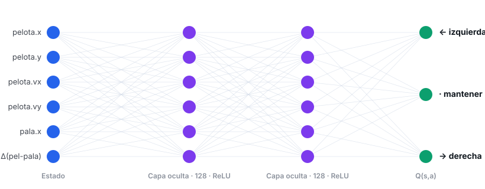
Para entrenar necesitamos un objetivo al que acercar las predicciones. En RL ese objetivo se construye con la propia red (ecuación de Bellman), así que si usáramos la misma red para predecir y para fijar su objetivo, este se movería a cada paso: como intentar alcanzar tu propia sombra. La solución son dos copias de la red:
Antes de ver los algoritmos uno a uno, conviene entender la maquinaria común que todos comparten. Si entiendes este ciclo, sabrás trasladar el mismo esqueleto a cualquier otro proyecto de RL: cambia el juego y el algoritmo, pero las piezas (entorno, agente, memoria, bucle, métricas) son siempre las mismas.
El entorno es una simulación pura: no dibuja nada, solo calcula física. Vive en entornoArkanoid.js. Al crearse o reiniciarse coloca los 28 ladrillos (4 filas × 7 columnas), lanza la pelota con una dirección aleatoria y sitúa la pala. La clave de diseño es que la física es de paso fijo: cada llamada a paso(accion) avanza exactamente un instante de simulación. La "velocidad" que verás en la interfaz no acelera la física (eso cambiaría la dinámica y rompería el aprendizaje): solo decide cuántos pasos se ejecutan por fotograma.
// Avanza un paso de simulación aplicando la acción del agente. paso(accion) { if (this.estaTerminado()) return { recompensa: 0, done: true }; this.pasos++; this.recompensaPaso = RECOMPENSAS.PASO; // 0 por paso (no penaliza sobrevivir) this._aplicarAccion(accion); // mueve la pala ← · → this._moverPelota(); // x += vx ; y += vy (paso fijo) this._colisionParedes(); this._colisionPala(); // +0.10 si devuelve la pelota this._colisionLadrillos(); // +1.0 por ladrillo roto this._verificarFin(); // −1.0 si pierde la pelota; +5.0 si limpia el nivel this._aplicarShaping(); // recompensa densa: acercarse a la pelota this.recompensaEpisodio += this.recompensaPaso; return { recompensa: this.recompensaPaso, done: this.estaTerminado() }; }
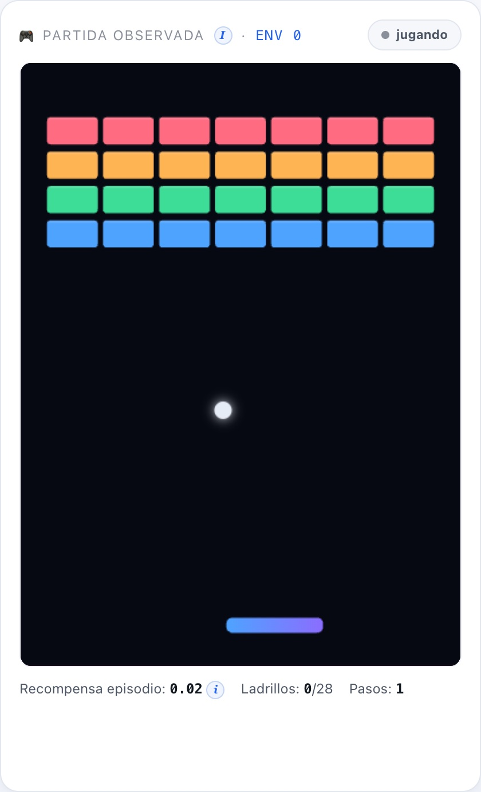
return [ p.x * 2 - 1, p.y * 2 - 1, // posición de la pelota → [-1,1] p.vx / CFG.VELOCIDAD_PELOTA, p.vy / CFG.VELOCIDAD_PELOTA, // velocidad → [-1,1] this.pala.x * 2 - 1, // posición de la pala limitar((p.x - this.pala.x) * 2, -1, 1), // distancia horizontal pelota↔pala ];
En un Arkanoid normal, un humano pulsa teclas. Aquí el agente sustituye al jugador: en cada paso, su red recibe el estado y devuelve la acción. Y como queremos aprender deprisa, no jugamos una partida, sino cientos a la vez: el estado de los N entornos se apila en un único tensor [N × 6] y la red predice las N acciones de una sola pasada por la GPU (inferencia en lote). Esto es lo que hace que WebGPU rente: una llamada grande en vez de N pequeñas.
seleccionarAcciones(estadosFlat, n, { entrenar = true } = {}) {
const eps = entrenar ? this.epsilon : 0; // ε = probabilidad de explorar al azar
const greedy = tf.tidy(() => {
const sT = this._tensorEstados(estadosFlat, n); // tensor [N × 6]
return this.redPolitica.predict(sT).argMax(1).dataSync(); // mejor acción de cada entorno
});
const acciones = new Int32Array(n);
for (let i = 0; i < n; i++) // ε-greedy: a veces exploro, casi siempre exploto
acciones[i] = Math.random() < eps ? (Math.random()*this.numAcciones)|0 : greedy[i];
return acciones; // N acciones, una por partida
}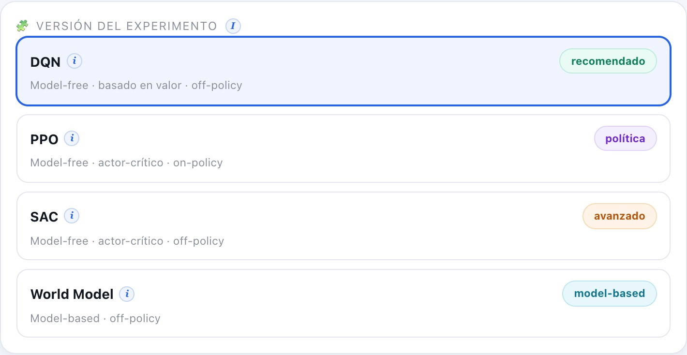
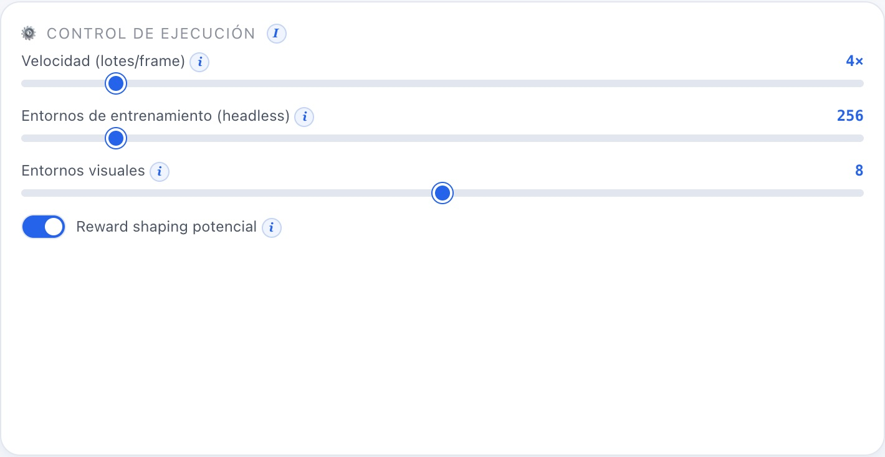
Si atáramos el aprendizaje a lo que se dibuja, estaríamos limitados a 8 ó 15 partidas. Por eso hay dos pools de entornos separados (gestorEntornos.js):
El pool headless (sin canvas) corre cientos de partidas para alimentar a la red. El pool visual ejecuta la misma política solo para que tú veas cómo juega. Es una ventana de observación, no el motor.
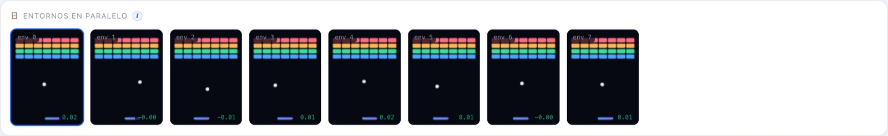
La unidad de experiencia es la transición: (s, a, r, s', done) — "estaba en el estado s, hice la acción a, gané r, acabé en s', y el episodio terminó (o no)". Cada paso de cada entorno produce una. El gestor las empaqueta en arrays planos (muy eficientes para crear tensores) y se las pasa al agente para que las guarde.
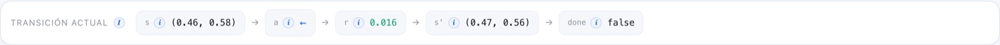
¿Dónde se guardan? Depende de la familia del algoritmo:
// Inserta un lote de transiciones en formato plano (buffer circular). agregarLote(lote) { const n = lote.recompensas.length; for (let i = 0; i < n; i++) { const baseDst = this.pos * this.dim, baseSrc = i * this.dim; for (let k = 0; k < this.dim; k++) { this.s[baseDst + k] = lote.estados[baseSrc + k]; // estado s this.s2[baseDst + k] = lote.siguientes[baseSrc + k]; // estado siguiente s' } this.a[this.pos] = lote.acciones[i]; // acción a this.r[this.pos] = lote.recompensas[i]; // recompensa r this.done[this.pos] = lote.terminados[i]; // done this.pos = (this.pos + 1) % this.capacidad; // circular: pisa lo más viejo if (this.tam < this.capacidad) this.tam++; } }
El orquestador.js no sabe de algoritmos ni de pantallas: solo repite un ciclo. Esta es una iteración (un "lote"): se observan los estados, el agente decide, el juego avanza, se guarda la experiencia y el agente entrena. Es el corazón que late decenas de veces por segundo.
async ejecutarLote() {
const n = gestor.numHeadless;
const estados = gestor.obtenerEstadosEntrenamiento(); // 1· observar los N estados
const acciones = this.agente.seleccionarAcciones(estados, n); // 2· la red decide N acciones
const resultado = gestor.aplicarAcciones(acciones); // 3· el juego avanza N pasos
this.agente.almacenarExperiencia(resultado); // 4· guardar (s,a,r,s',done)
this.metricas.registrarEpisodios(resultado.episodios); // 5· anotar episodios terminados
const metrica = await this.agente.entrenar(); // 6· UN paso de aprendizaje
this.pasoGlobal += n;
// 7· cada 250 pasos: registrar una traza y avisar a la UID por el bus de eventos
}Entrenar una red es ajustar sus pesos para que se equivoque menos. En RL no tenemos "respuestas correctas": construimos un objetivo a partir de la recompensa y de lo que la propia red cree que vale el futuro (ecuación de Bellman), y empujamos la predicción hacia ese objetivo. El truco para que no diverja es usar una red objetivo: una copia que se mueve despacio y nos da un blanco estable al que apuntar.
// El objetivo TD se calcula SIN gradiente (es el "blanco" estable). const objetivo = tf.tidy(() => { const aStar = this.redPolitica.predict(s2T).argMax(1); // Double DQN: la red online elige a* const qSig = this.redObjetivo.predict(s2T)...sum(1); // la red objetivo la evalúa return rT.add(qSig.mul(gamma).mul(noTerm)); // r + γ·(1-done)·Q'(s',a*) }); // Un paso de descenso de gradiente: acerca Q(s,a) al objetivo (pérdida Huber). const lossT = this.optimizador.minimize(() => { const qa = this.redPolitica.predict(sT).mul(aOneHot).sum(1); return tf.losses.huberLoss(objetivo, qa); }, true, this._varsPolitica); // La red objetivo sigue a la online MUY despacio (Polyak): estabilidad. actualizacionSuave(this.redPolitica, this.redObjetivo, tau); // τ = 0.01
El orquestador no toca la pantalla: emite trazas por un bus de eventos. La UI está suscrita y, cuando llega una traza nueva (cada 250 pasos), refresca las tarjetas de métricas y redibuja las cuatro curvas en sus <canvas>. Así el motor y la interfaz quedan desacoplados: podrías entrenar sin pantalla (lo hacemos en Node) o cambiar la UI sin tocar el algoritmo.
Así se ve la diferencia entre el arranque (sin datos) y tras unos segundos de entrenamiento real:
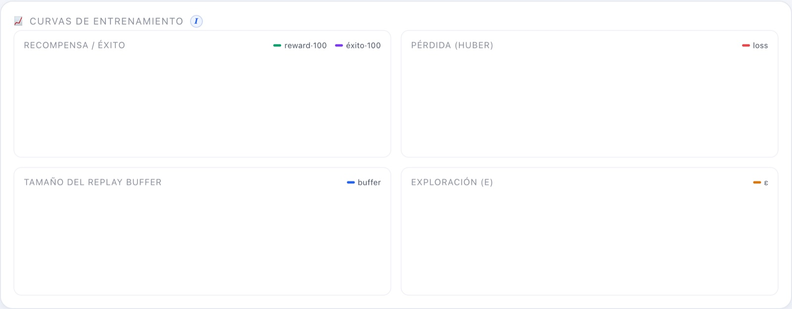
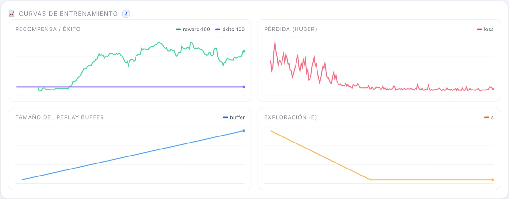
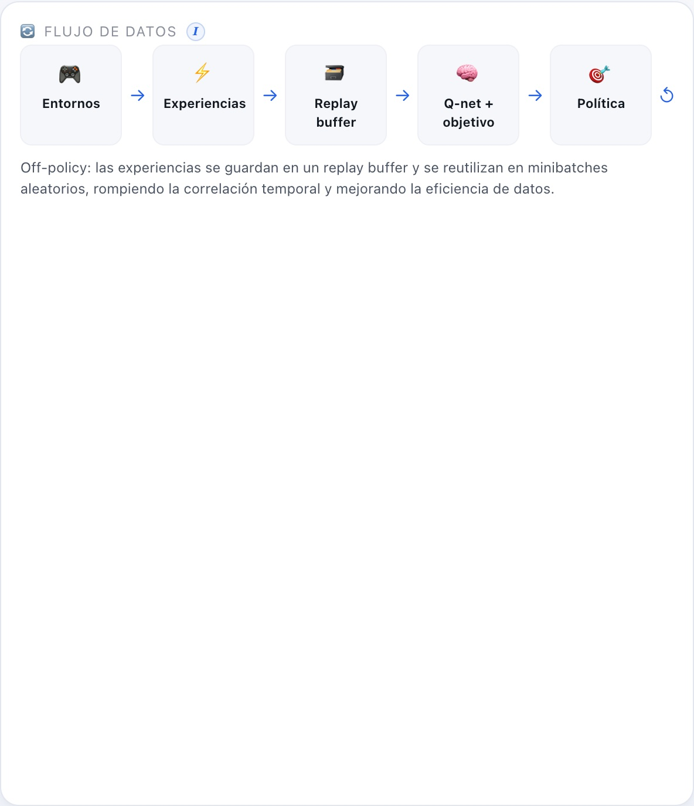
DQN aprende una función Q(s,a): dado un estado, estima la recompensa futura total que cabe esperar si tomamos cada acción y luego seguimos jugando bien. Con esa tabla de valores, actuar es trivial: elige la acción de mayor Q. Lo "deep" es que esa función Q no es una tabla, sino una red neuronal, capaz de generalizar a estados que nunca vio exactamente.
DQN fue el primer algoritmo que aprendió a jugar decenas de juegos de Atari a nivel humano solo a partir de píxeles.
Decisiones del tipo "encender/apagar/mantener": climatización, gestión de colas, semáforos.
Elegir el siguiente contenido a mostrar para maximizar el interés a largo plazo.
Decidir cuándo cargar/descargar una batería según precio y demanda.
DQN no guarda Q(s,a) en una tabla (imposible con un estado continuo): usa una red neuronal para aproximar Q. Es exactamente el MLP descrito en Fundamentos · La red neuronal: entran los 6 números del estado, pasan por dos capas ocultas de 128 neuronas (ReLU) y salen 3 valores Q, uno por acción. Para estabilizar el entrenamiento mantenemos dos copias: la red actual (decide y se entrena) y la red objetivo (copia lenta que fija el blanco de Bellman), tal y como se explica en Fundamentos.
El entorno. Arkanoid: el agente observa 6 números, dispone de 3 acciones y recibe +1 por ladrillo, +0.1 por devolver la pelota y −1 por perderla. El objetivo: maximizar la recompensa acumulada por episodio.
| Ajuste | Valor | Qué es y qué efecto tiene |
|---|---|---|
| learning_rate | 8e-4 | El tamaño de cada paso de aprendizaje. Grande = rápido pero inestable; pequeño = lento pero estable. |
| gamma (γ) | 0.99 | Cuánto importan las recompensas futuras frente a las inmediatas (0 = cortoplacista, →1 = previsor). |
| epsilon (ε) | 1.0 → 0.05 | Probabilidad de explorar al azar; decae a lo largo de 25.000 pasos hacia 0.05 (casi siempre explotar). |
| replay buffer | 100.000 | Cuántas experiencias recordamos para muestrear lotes aleatorios. |
| batch_size | 128 | Cuántas transiciones se usan en cada paso de gradiente. |
| tau (τ) | 0.01 | Velocidad a la que la red objetivo sigue a la principal (1% por paso): estabilidad. |
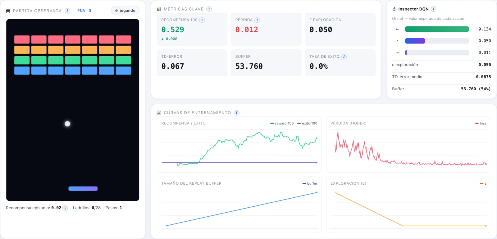
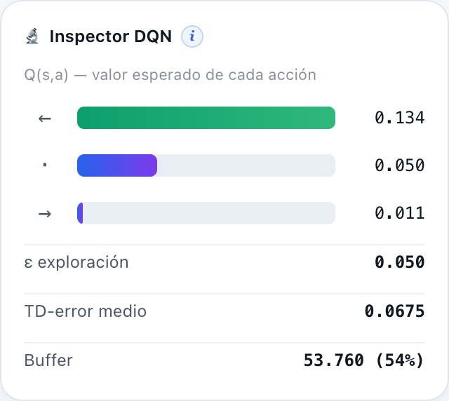
En una ejecución real en el navegador (WebGPU), la recompensa media de los últimos 100 episodios subió de ~0.0 a ~0.94 en cuestión de segundos, con un throughput de ~24.000 experiencias/s. El agente aprende con claridad a seguir y devolver la pelota; limpiar los 28 ladrillos (tasa de éxito > 0) exige entrenamientos largos.
En lugar de estimar el valor de cada acción, PPO ajusta directamente la política π(a|s): una red que da la probabilidad de cada acción. Una segunda red, la crítica, estima el valor V(s) del estado y sirve para juzgar si una acción fue mejor o peor de lo esperado (la ventaja). PPO es hoy el caballo de batalla del RL: estable y robusto.
Acciones continuas o discretas en robots, brazos y locomoción; es el algoritmo por defecto en muchas suites.
PPO se usó para alinear modelos de lenguaje con preferencias humanas (la "P" de ChatGPT entrenado con RLHF).
Dota 2 (OpenAI Five) y muchos entornos de simulación se entrenaron con PPO a gran escala.
Control de sistemas donde la estabilidad del entrenamiento es crítica.
Dos redes MLP independientes: el actor (6 → 128 → 128 → 3 logits → softmax = probabilidades) y la crítica (6 → 128 → 128 → 1 = valor del estado).
Mismo entorno Arkanoid. PPO es on-policy: recoge un rollout, lo exprime en varias épocas y lo tira.
| Ajuste | Valor | Qué es y qué efecto tiene |
|---|---|---|
| longitud_rollout | 256 | Pasos por entorno que se recogen antes de cada actualización. |
| épocas | 4 | Cuántas veces se reaprovecha cada rollout antes de descartarlo. |
| clip ε | 0.2 | Cuánto se permite cambiar la política por actualización (el "freno"). |
| GAE λ | 0.95 | Equilibrio sesgo/varianza al estimar la ventaja (0 = solo 1 paso; →1 = muchos pasos). |
| coef_entropía | 0.01 | Premia mantener algo de aleatoriedad en la política (exploración). |
| max_norma_grad | 0.5 | Recorta el gradiente para que ningún paso sea desmesurado. |
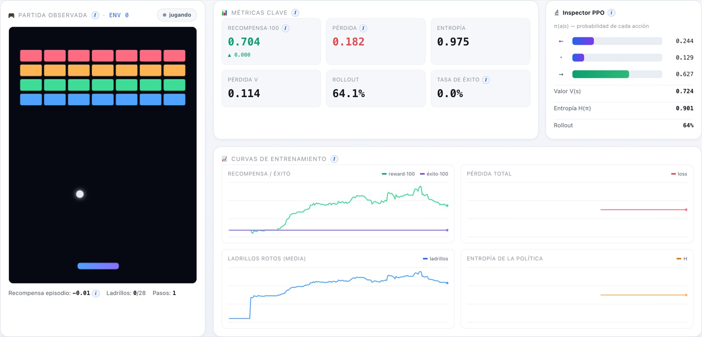
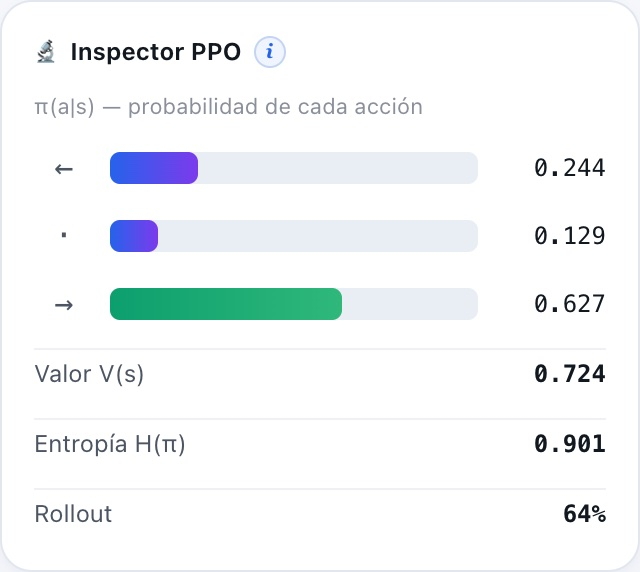
PPO aprende de forma muy estable (curva monótona). En ejecución real, la recompensa pasó de ~0.1 a ~0.99 en el navegador, y en una corrida más larga en CPU alcanzó ~4.08 (ya rompe varios ladrillos por episodio). La entropía se mantiene alta al principio y baja despacio según la política se afila.
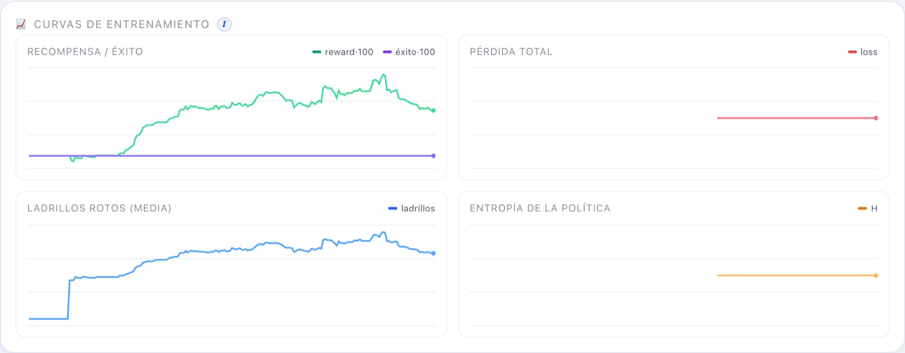
SAC es actor-crítico off-policy con una idea extra: no solo maximiza la recompensa, también la entropía de la política (cuán aleatoria es). Esto mantiene la exploración viva y evita que el agente se "cierre" demasiado pronto en una sola estrategia. Usa dos críticos y un coeficiente de temperatura α que se ajusta solo.
Es uno de los mejores algoritmos para control de robots reales por su eficiencia de muestra y robustez.
Entornos donde explorar de forma segura y constante es clave.
Tareas con muchas soluciones parecidas, donde mantener variedad ayuda a no estancarse.
Banco de pruebas habitual para estudiar exploración y estabilidad.
Un actor (política) y dos críticos Q (más sus dos redes objetivo). Trabajar con el mínimo de los dos críticos evita la sobreestimación de valores.
| Ajuste | Valor | Qué es y qué efecto tiene |
|---|---|---|
| lr_actor / crítico / α | 6e-4 / 8e-4 / 6e-4 | Tres ritmos de aprendizaje, uno por red. El crítico aprende algo más rápido. |
| tau (τ) | 0.01 | Velocidad de las dos redes objetivo (soft update). |
| entropía objetivo | 0.55·log 3 | Cuánta aleatoriedad queremos mantener; gobierna hacia dónde empuja α. |
| batch / buffer | 128 / 100.000 | Es off-policy: reutiliza experiencias de un replay buffer. |
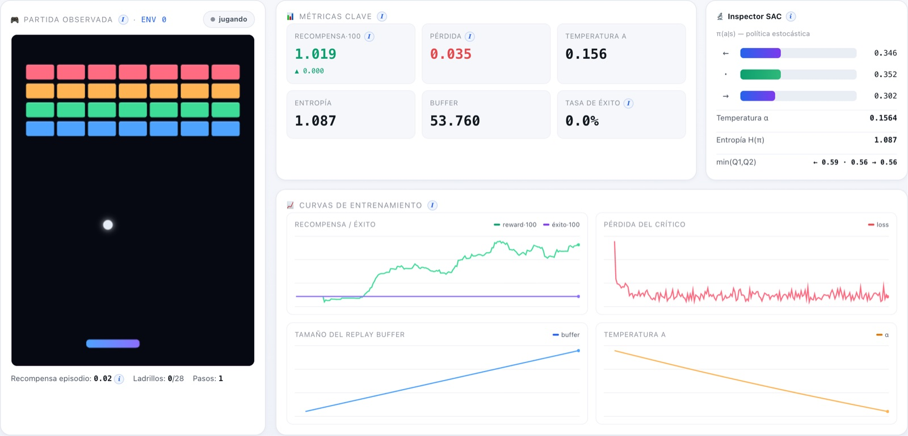
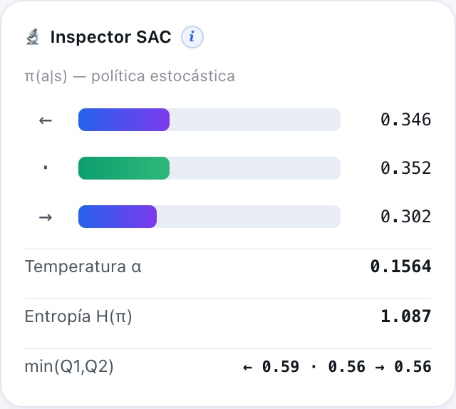
SAC aprende y la temperatura se estabiliza sola. En el navegador, la recompensa subió de ~0.0 a ~0.99, con α descendiendo de 0.20 a ~0.165 y la entropía manteniéndose alta (exploración sana). Sin fugas: 76 tensores constantes durante todo el entrenamiento.
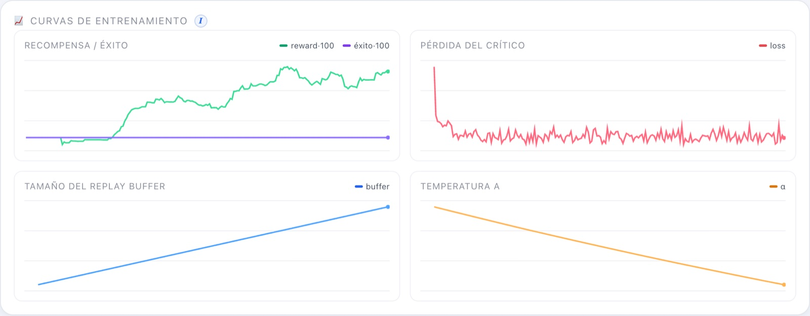
Los tres anteriores son model-free: aprenden qué hacer sin entender el entorno. Un World Model es model-based: aprende un modelo de la dinámica —una red que predice, dado (s, a), cuál será el siguiente estado s', la recompensa r y si termina— y lo usa para generar experiencia imaginada con la que entrenar (Dyna-Q). Así exprime cada paso real muchas veces.
Robots reales o procesos donde cada paso cuesta tiempo/dinero: imaginar multiplica los datos disponibles.
Modelos del mundo (MuZero, Dreamer) que planifican mirando hacia delante con su propio simulador aprendido.
Aprender buenas políticas con muchos menos episodios reales.
Sustituir un simulador caro por una red rápida que lo aproxima.
Dos piezas: un Q-net (como DQN) que decide, y un modelo de dinámica (6+3 entradas → 200 → 200 → Δs, r, done) que predice el futuro. El modelo predice el incremento Δs (más estable que s' directo): s' = s + Δs.
| Ajuste | Valor | Qué es y qué efecto tiene |
|---|---|---|
| capas del modelo | 200·200 | El modelo de dinámica es algo más grande: tiene que aprender la física. |
| pasos_planning | 5 | Actualizaciones del Q-net con datos imaginados por cada paso real. |
| arranque_modelo | 1.000 | Pasos reales antes de empezar a entrenar el modelo (necesita datos primero). |
| lr_modelo | 1e-3 | Ritmo de aprendizaje del modelo de dinámica (supervisado). |
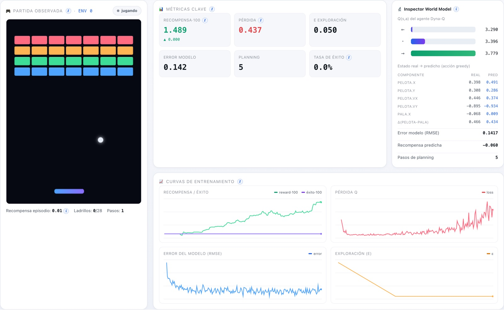
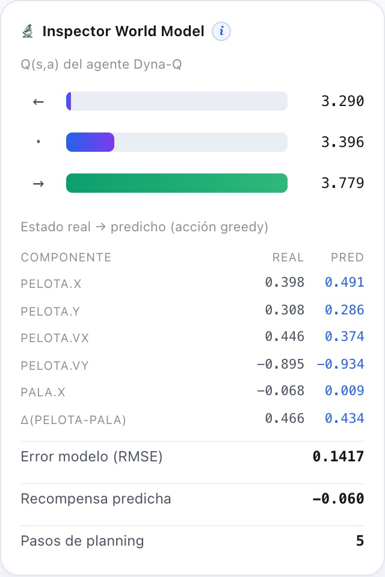
El modelo aprende a predecir la física con un error RMSE ~0.066 sobre estados normalizados (muy bajo: las predicciones siguen de cerca a la realidad, como se ve en el inspector). La recompensa subió de ~0.0 a ~0.71 en el navegador. Sin fugas: ~46 tensores constantes.
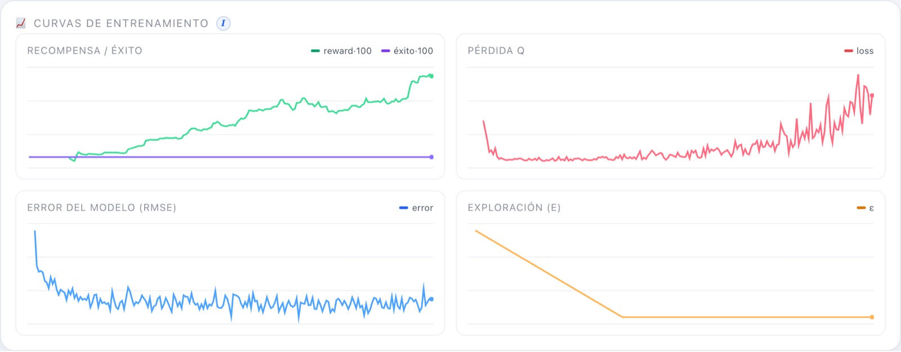
| Algoritmo | Familia | Política | Qué aprende | Exploración | Señal propia | Reward real* |
|---|---|---|---|---|---|---|
| DQN | Model-free · valor | off-policy | Q(s,a) | ε-greedy | TD-error, ε | 0 → 0.94 |
| PPO | Model-free · actor-crítico | on-policy | π(a|s) + V(s) | entropía | entropía, ventaja | 0.1 → 0.99 (4.08 en CPU) |
| SAC | Model-free · actor-crítico | off-policy | π + 2·Q | máx. entropía (α) | temperatura α | 0 → 0.99 |
| World Model | Model-based | off-policy | dinámica + Q | ε-greedy | error del modelo | 0 → 0.71 |
* Recompensa media de los últimos 100 episodios, medida en ejecuciones reales (navegador con WebGPU; el dato de PPO en CPU es de una corrida más larga). El throughput observado fue de ~24.000 exp/s en WebGPU frente a ~5.600 exp/s en CPU.
git clone https://github.com/rcanalescoder/DRLArkanoid.git && cd DRLArkanoid
npm install # vite + @tensorflow/tfjs + backend WebGPUnpm run dev # abre http://localhost:5173 y pulsa ▶ Entrenar ./arrancar.sh # alternativa: arranca y, si ya estaba, rearranca
npm run verificar # entrena los 4 algoritmos (CPU) y reporta si aprenden node scripts/entrenar.mjs dqn --pasos 40000 --envs 128 # entrena uno y muestra trazas
const modelo = tf.sequential({ name: nombre });
capasOcultas.forEach((unidades, i) => {
modelo.add(tf.layers.dense({
units: unidades, activation: "relu",
inputShape: i === 0 ? [dimEntrada] : undefined,
kernelInitializer: "heNormal", // buena inicialización para ReLU
}));
});
modelo.add(tf.layers.dense({ units: dimSalida, activation: activacionSalida }));const ratio = logpA.sub(logpViejoMb).exp(); // ρ = π_nueva / π_vieja const surr1 = ratio.mul(advMb); const surr2 = ratio.clipByValue(1 - eps, 1 + eps).mul(advMb); // recorte const lossPol = surr1.minimum(surr2).mean().mul(-1); // objetivo recortado const entropia = probs.mul(logp).sum(1).mean().mul(-1); const lossVal = valor.sub(retMb).square().mean(); // crítica: MSE contra el retorno return lossPol.add(lossVal.mul(coefValor)).sub(entropia.mul(coefEntropia));
// α se ajusta para acercar la entropía de la política a la entropía objetivo.
const lossAlphaT = pasoGradiente(this.optAlpha, () => {
const term = this.logAlpha.mul(-1).mul(logpC.add(this.targetEntropy));
return probsC.mul(term).sum(1).mean();
}, [this.logAlpha]);const lossT = pasoGradiente(this.optModelo, () => {
const out = this.modelo.predict(entrada); // entrada = [s ⊕ one-hot(a)]
const dsPred = out.slice([0, 0], [B, this.dimEstado]); // Δs predicho
const rPred = out.slice([0, this.dimEstado], [B, 1]); // r predicha
const donePred = out.slice([0, this.dimEstado + 1], [B, 1]);
return tf.losses.meanSquaredError(dsObjetivo, dsPred) // aprender la física…
.add(tf.losses.meanSquaredError(rT, rPred)) // …la recompensa…
.add(tf.losses.sigmoidCrossEntropy(doneT, donePred).mul(0.5)); // …y el fin de episodio
}, this._varsModelo);Licencia MIT Copyright (c) 2026 Roberto Canales Mora Por la presente se concede permiso, sin cargo, a cualquier persona que obtenga una copia de este software y de los archivos de documentación asociados (el "Software"), para utilizar el Software sin restricción, incluyendo sin limitación los derechos a usar, copiar, modificar, fusionar, publicar, distribuir, sublicenciar y/o vender copias del Software, y a permitir a las personas a las que se les proporcione el Software a hacer lo mismo, sujeto a las siguientes condiciones: El aviso de copyright anterior y este aviso de permiso se incluirán en todas las copias o partes sustanciales del Software. EL SOFTWARE SE PROPORCIONA "TAL CUAL", SIN GARANTÍA DE NINGÚN TIPO, EXPRESA O IMPLÍCITA, INCLUYENDO PERO NO LIMITADO A GARANTÍAS DE COMERCIALIZACIÓN, IDONEIDAD PARA UN PROPÓSITO PARTICULAR Y NO INFRACCIÓN. EN NINGÚN CASO LOS AUTORES O PROPIETARIOS DE LOS DERECHOS DE AUTOR SERÁN RESPONSABLES DE NINGUNA RECLAMACIÓN, DAÑOS U OTRAS RESPONSABILIDADES, YA SEA EN UNA ACCIÓN DE CONTRATO, AGRAVIO O DE OTRO MODO, QUE SURJA DE, FUERA DE O EN CONEXIÓN CON EL SOFTWARE O EL USO U OTROS NEGOCIOS EN EL SOFTWARE.